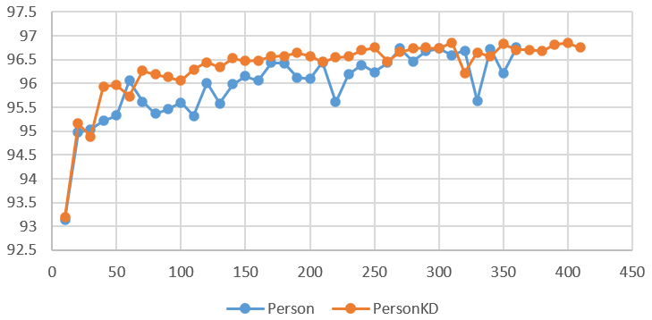

Demo on Teams
Target & Obstacle
We need to improve the accuracy of person segmentation neural network.
1. Model size and running time are strictly restrained. We need to increase IoU with a little cost.
2. Original model is well-trained and finely modified. We do not have enough time and manpower to finely modify a model. As a consequence, Our refinement method needs to be efficient enough to provide IoU improvement even without fine tuning parameters.
Knowledge Distillation

In Knowledge distillation (KD), the teacher is MobileNetV2 2.0 and the student is MobileNetV2 0.5
Cross Knowledge Distillation
We proposed cross knowledge distillation inspired by KD. In cross KD, the student network has to learn how to generate and handle the same feature extracted by the teacher network.
We found that cross KD can accelerate the speed of convergence significantly. However, the improvement in IoU is subtle under this scenario.
Adaptive Scale
(We use new dataset here because more labeled data are available. Thus, IoU maybe a litte lower.)
Inspired by squeeze and excitation networks(J. Hu, L. Shen and G. Sun, CVPR, 2018), I proposed adaptive scale.
- Squeeze & Excitation
Local Scale: extract global feature and multiply to itself.

- Fixed Scale
In order to reduce computional cost, scale parameters are fixed and deriver from training.
- Global Adaptive Scale

To balance performance and cost, we apply global adaptive scale on decoder and fixed scale on encoder.
- Result
Our method out-performed raw network with a little cost and no fine-tuning.

Pruning
On red circle, we will prune the values in weight matrix which less than a threshold to zero. For green circle, no pruning and let the network "recover" during training.
Training on 4 x Tesla P40 for 117 hours.
Sparsity: 0% -> ~40%

IoU on image: 95.48% -> 95.32%